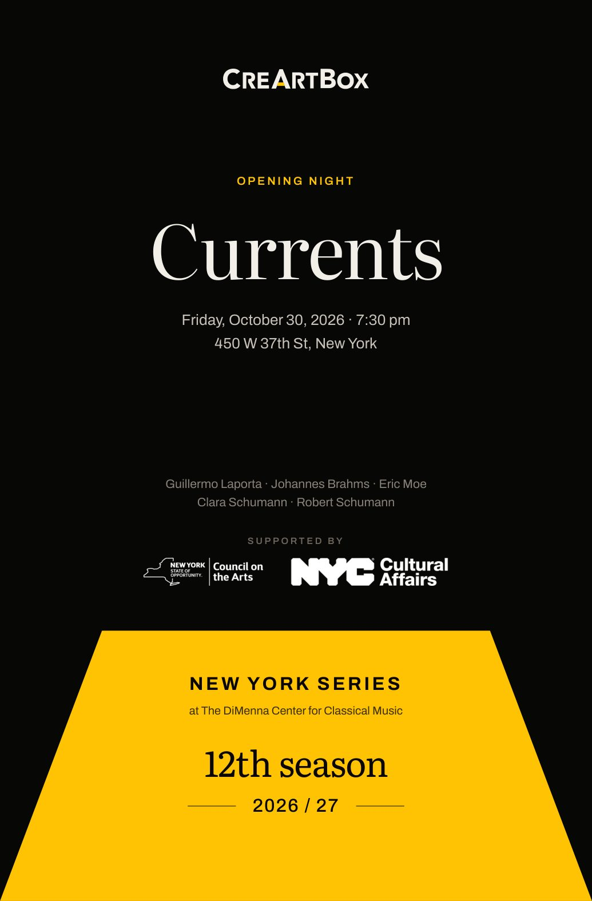

Five days at the Kuopio Conservatory
Guillermo Laporta and Josefina Urraca teach in Finland from 5 to 9 October, and play one public concert next door at the Music Centre.
Read on →The booklet for 30 October can be read page by page on the site, or downloaded, a month before the concert.

Currents opens the New York Series on 30 October at 7:30 pm, at The DiMenna Center for Classical Music. The printed programme is ready, and rather than keep it for the door, it is on the site now: the booklet turns page by page on a wide screen, one page at a time on a phone, and downloads as a PDF.

Five works around a single idea: movement carried from one place to another. Laporta's piece begins with the players offstage, walking on as they play. Moe's takes its title from the term in fluid dynamics for movement in smooth parallel layers, the opposite of turbulence. The other three trace the current running between Brahms and the Schumanns.
Approximately 60 minutes, played without intermission.
Tickets are on sale through Eventbrite. Premium seats are the best in the hall, the closest rows to the players, with a small treat on the night. For group rates, accessibility, or press tickets, write to info@creartbox.nyc.
Guillermo Laporta and Josefina Urraca teach in Finland from 5 to 9 October, and play one public concert next door at the Music Centre.
Read on →
More than in any season before, and in April an entire evening is given over to them.
Read on →
Four productions at The DiMenna Center, eleven works from the open call, one world premiere, touring dates in Illinois, Kentucky and the Hudson Valley, a residency in Finland, and the seventh Festival ADAR in Asturias.
Read on →